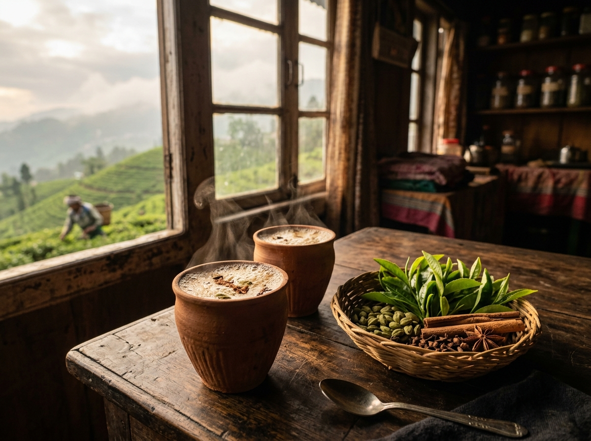

From the Tea Garden to Your Cup
Our Sacred Tea Estates
Every blend begins in misty valleys where volcanic soil and monsoon rains create extraordinary depth of flavor.

Malty Bold CTC & Orthodox
Grown on low-altitude fertile floodplains along the Brahmaputra River. Delivers that robust, deep amber backbone that holds up boldly to warm whole milk and crushed ginger.

Champagne of Teas
Steep slopes shrouded in cool Himalayan mist. Hand-picked at daybreak to capture delicate floral notes, naturally occurring Muscatel sweetness, and pale golden liquor.

Citrus Frost & Cold Brews
Harvested in southern India under winter frost. Naturally sweet and aromatic with zero bitterness, making it the perfect foundation for our cold brews and iced fruit chais.
The 6 Sacred Spices
We never purchase ground spice dust. Every spice arrives whole from regenerative spice forests and is crushed fresh in our stalls daily.
Green Cardamom
Jumbo 8mm green pods rich in aromatic cineole essential oils. Imparts sweet, cooling, floral notes that define authentic Indian chai.
Ceylon Cinnamon Quill
Delicate, multi-layered true Ceylon cinnamon bark. Delivers subtle woody warmth without the harsh pungent bite of synthetic cassia.
Fresh Mountain Ginger
Fibrous, spicy young ginger root hand-pounded to release fresh gingerols. Provides the revitalizing throat-warming kick we cherish.
Sun-Dried Cloves
Head-intact aromatic flower buds dried under coastal sunshine. Highly antimicrobial and comforting for digestion.
Tellicherry Black Pepper
Extra bold vine-ripened black peppercorns that balance the rich sweetness of milk and unlock turmeric curcumin absorption.
Mongra Grade Saffron
Deep crimson hand-plucked stigmas from the purple autumn crocus. Imparts royal golden hues and a sweet intoxicating aroma.
Rooted in Responsibility
Our commitment goes far beyond brewing great tea. We believe the tea industry must urgently change how farming families are compensated and how packaging impacts the environment.
-
Guaranteed 25% Wage Premium: We pay above market standard directly to picker associations to support local healthcare and education.
-
Clay Kulhad Vessels: Our traditional unglazed earthenware cups are hand-thrown by local potters and naturally biodegrade into soil.
-
Pesticide-Free Testing: Every estate shipment is independently tested for zero chemical residue before entering our blend kitchen.

The Farm-to-Cup Process
From estate soils to your steaming cup, here is how each batch of Chai & Co. comes alive.
Select
Cupping evaluations at peak harvest flushes.
Source
Fair-trade contracts with small estate growers.
Blend
Small-batch artisanal spice formulation.
Brew
Aerated, simmered, and pulled to perfection.
Serve
Poured in hot earthen kulhads with sincere care.